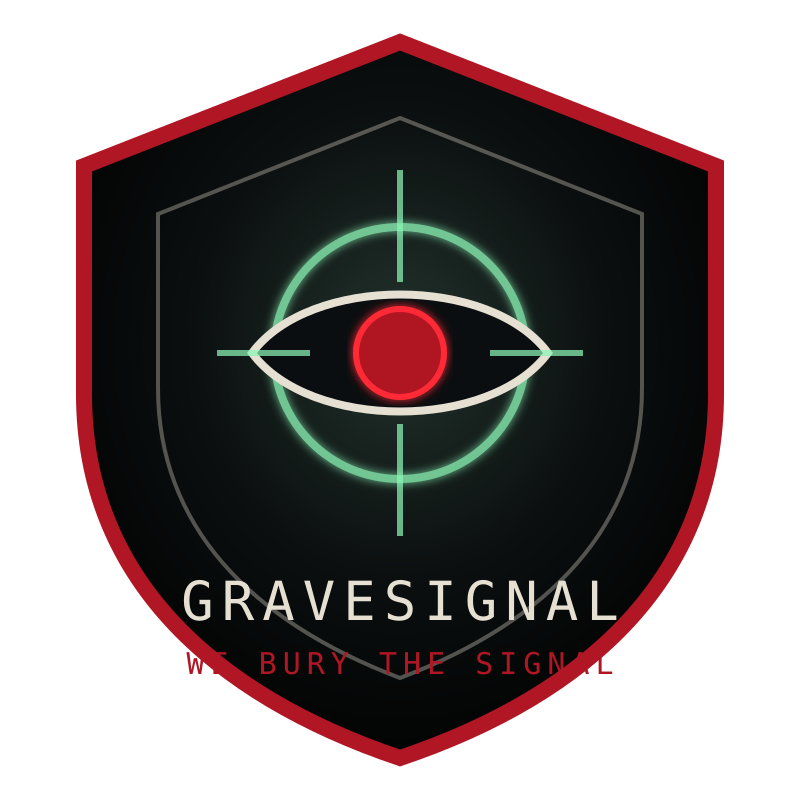

MERIDIAN ARCHIVE NODE 43-B
BLACK MERIDIAN
BOOK I // THE APOCRYPHA DIRECTIVE // V3.3
STATUS: UNSEALED
AUTHORITY: UNKNOWN
THREAT VECTOR: CIVILIAN MEMORY
PLAYBACK: PENDING USER CONSENT
Audio unlocks after entry. One repo. One archive. V3.1 remains canon; Book I Act I is now expanded into long-form prose with evidence, choices, logs, and solved locks.